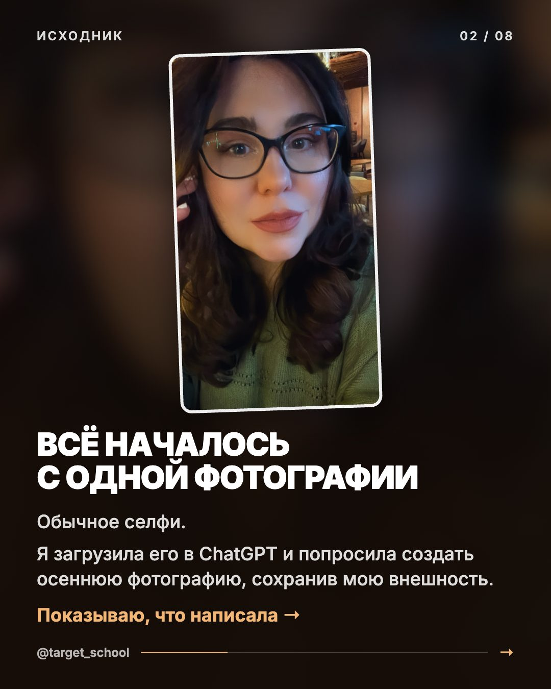
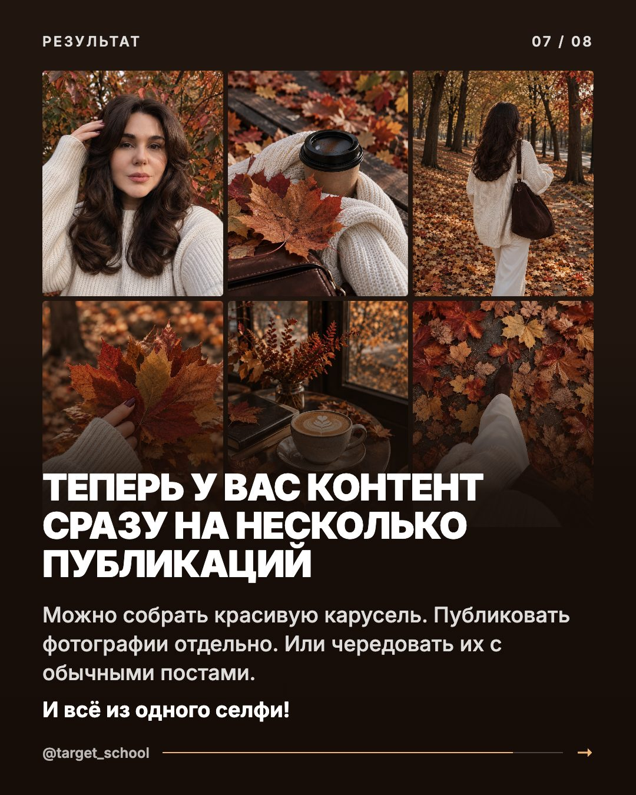
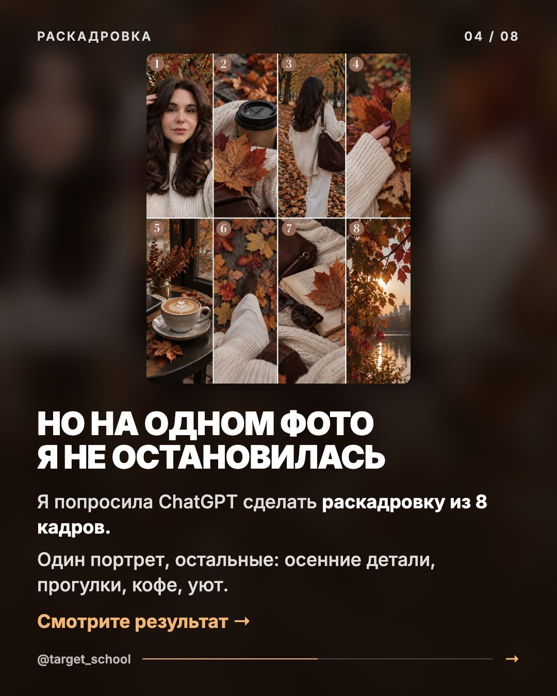
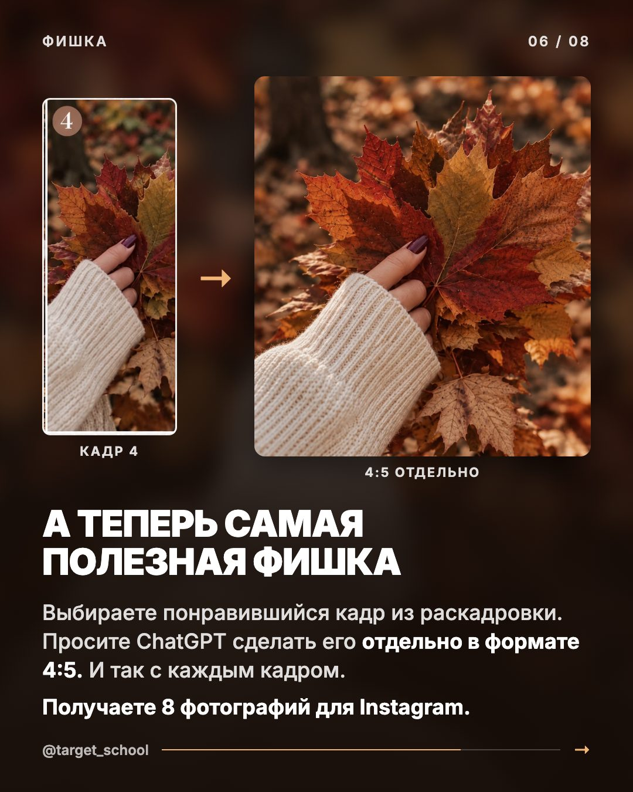

октябрь 20268 мин чтенияАвтор: Анастасия Лушникова
Осенняя фотосессия в ChatGPT: 8 кадров из одного селфи
ChatGPTПромптыВизуалКонтент
Это обычное селфи. Очки, зелёный свитер, вечер в кафе.
Из него я сделала 8 осенних кадров: портрет под клёнами, прогулка по аллее, кофе, листья в руке, капучино у окна.
Я никуда не выходила. Всё собрала в ChatGPT за один вечер. Ниже 4 промпта по порядку, каждый копируется одной кнопкой.

Было

Стало
🍂
Делайте всё в одном чате ChatGPT. Так нейросеть помнит главный портрет, и все 8 кадров выглядят как одна съёмка.
Шаг 1. Фото
Выберите одно селфи
Откройте chatgpt.com или приложение на телефоне и создайте новый чат. Понадобится одна фотография, где хорошо видно лицо.
Естественный свет, без сильных фильтров.
Видно глаза, нос и губы.
Лицо не закрыто волосами. Очки допустимы, у меня на исходнике они были, но без них сходство обычно выше.
Мой совет: берите фото, на котором Вы себе нравитесь. Нейросеть держится за то, что видит, и сохраняет внешность точнее.
Нажмите на скрепку и загрузите фото в чат.
Шаг 2. Портрет
Главный осенний кадр
Отправьте этот промпт вместе с фотографией. Из него получится портрет, от которого дальше строится вся фотосессия.
Промпт 1
Осенний портрет
Селфи снизу вверх под кронами, молочный свитер, объёмные волосы.
промпт 1 · портрет
Не меняй черты лица. Ультрареалистичный натуральный кадр на iPhone 17 Pro Max, точно повторить композицию: очень близкий осенний селфи-кадр снизу вверх, камера находится чуть ниже уровня лица, девушка занимает почти весь кадр.
Девушка стоит под деревьями с яркой осенней листвой, фон полностью заполнен кронами с красными, оранжевыми и зелёными листьями. Камера направлена вверх, создавая ощущение случайного снимка на прогулке.
Она в объёмном молочно-белом вязаном свитере крупной фактуры, мягкая плотная вязка, длинные рукава закрывают часть кистей.
Поза: одна рука поднята к волосам, пальцы не закрывают лицо, а аккуратно поправляют передние пряди у виска и убирают волосы в сторону. Лицо полностью видно. Вторая часть волос свободно лежит вокруг плеч. Взгляд направлен в камеру, лёгкая естественная полуулыбка.
Волосы: распущенные, длинные по пояс, объёмная укладка layered blowout, крупные мягкие волны, объём у корней, волосы живо лежат вокруг лица и плеч, несколько прядей слегка двигаются от ветра.
Ногти короткие, форма квадрат, бордовые.
Свет: мягкий естественный дневной свет через листву, лёгкие тени от веток на волосах и лице, тёплая осенняя цветокоррекция, натуральная экспозиция.
Реальное фото на телефон: лёгкое зерно, естественная кожа, настоящая текстура волос и вязки, немного случайная композиция, без HDR, без пластика, без эффекта AI.
Мягкая сомкнутая улыбка.
Формат 9:16
Волосы, ногти и свитер в промпте мои. Поменяйте под себя: цвет и длину волос, маникюр, одежду. Иначе ChatGPT дорисует Вам чужую причёску.
Если лицо изменилось, отправьте следом эту фразу:
если лицо не похоже
Сохрани мою внешность максимально точно по загруженной фотографии. Не меняй форму глаз, носа, губ, овал лица и индивидуальные особенности. Убери чрезмерную ретушь. Сделай кожу естественной.
Не помогло, попробуйте другое исходное фото. Сходство на 100% нейросеть не гарантирует, с удачным селфи оно заметно выше.
Шаг 3. Раскадровка
Из одного портрета целая фотосессия
Это главный приём. В том же чате попросите ChatGPT нарисовать 8 кадров одной съёмки на одном листе. Лицо будет не на каждом: детали, кадры со спины и пейзаж делают серию живой.
Промпт 2
Раскадровка из 8 кадров
Коллаж 4 × 2 с номерами, все кадры в одной гамме.
промпт 2 · раскадровка
Используй созданную осеннюю фотографию как основной визуальный референс.
Создай единую раскадровку профессиональной осенней lifestyle-фотосессии из 8 разных кадров.
Размести их в виде коллажа: 4 столбца и 2 ряда.
КРИТИЧЕСКИ ВАЖНО:
Все фотографии должны выглядеть как кадры одной фотосессии, сделанной в один день.
Сохрани:
- Одну и ту же девушку.
- Её настоящую внешность.
- Длинные объёмные каштановые волосы.
- Молочно-белый вязаный свитер.
- Единую осеннюю цветовую палитру.
- Натуральный свет.
- Атмосферу дорогой, но естественной lifestyle-фотографии.
Не нужно показывать лицо на каждом кадре. Сделай разнообразную раскадровку с крупными планами, деталями и кадрами со спины.
РАСКАДРОВКА:
Кадр 1. Главный портрет девушки под осенними деревьями. Лицо хорошо видно, взгляд в камеру, мягкий естественный свет.
Кадр 2. Крупный план бумажного стаканчика кофе с чёрной крышкой. Рядом молочный вязаный свитер, коричневая кожаная сумка и красивые осенние листья.
Кадр 3. Девушка со спины идёт по осенней аллее. Длинные каштановые волосы, объёмный молочный свитер, светлые брюки и коричневая сумка на плече. На земле опавшая листва.
Кадр 4. Крупный план женской руки с коротким бордовым маникюром. Рука в рукаве молочного свитера держит несколько красных и золотистых кленовых листьев.
Кадр 5. Красивая чашка капучино с латте-артом на столике у окна уютного кафе. Рядом осенние веточки, мягкий свет и тёплая атмосфера.
Кадр 6. Вид сверху на ноги девушки во время прогулки. Светлые брюки, коричневые ботинки, осенние листья на дорожке. Часть молочного свитера попадает в кадр.
Кадр 7. Атмосферный натюрморт: открытая книга, коричневая кожаная сумка, солнцезащитные очки, кленовый лист и мягкий молочный свитер.
Кадр 8. Осенние деревья с красными и золотистыми листьями. Мягкое вечернее солнце проходит сквозь ветви, на заднем плане водоём. Кинематографичный пейзаж.
ЦВЕТОКОРРЕКЦИЯ:
Используй цветовую гамму главной фотографии.
Приглушённые, естественные оттенки осени.
Цвета: шоколадный, кремовый, пыльный терракотовый, оливковый, приглушённый бордовый, карамельный.
Умеренная насыщенность, мягкий контраст, натуральная экспозиция.
Никаких кислотно-оранжевых цветов, чрезмерной яркости, сильного золотого свечения и искусственного HDR.
Стиль: quiet luxury, editorial lifestyle, natural autumn photography.
Реалистичная текстура кожи, ткани, листьев и волос.
Никакого пластикового AI-эффекта.
Добавь небольшие номера от 1 до 8 в верхнем углу каждого кадра, чтобы их было удобно выбирать.
Все кадры должны быть визуально разными, но выглядеть как одна фотосессия.

Так выглядит раскадровка
Секрет цельности в одной строке: «используй цветовую гамму главной фотографии». Из-за неё восемь разных кадров выглядят как одна съёмка.
Пока ChatGPT рисует
Одна мысль, пока идёт генерация
Раскадровка рисуется минуту-две. Расскажу, зачем я вообще это показываю.
Красивые фото оживляют ленту. Но вот честно, денег они не приносят.
Мой блог с 2017 года принёс больше 110 млн рублей. Красивые картинки там были. Платили мне за то, что лежит под ними: кому я говорю, что человек получит и куда он пойдёт дальше.
И Вы сейчас внутри примера. Увидели карусель, написали ОСЕНЬ, открыли эту страницу. Меня в этой цепочке не было, она сработала сама.
Хотите, чтобы так работал Ваш блог? Начните с диагностики: 5 вопросов в моём Telegram-боте.
Иногда ChatGPT перебарщивает: листья светятся, кожа пластиковая, контраст режет глаз. По такому кадру нейросеть видно сразу. Я поправила цвет отдельным промптом.
Промпт 3
Цветокоррекция
Все 8 кадров в одну приглушённую гамму, без AI-глянца.
промпт 3 · цвет
Приведи все 8 кадров раскадровки к единому цветовому решению главной фотографии.
Используй главную фотографию как строгий референс цветокоррекции.
Сделай цвета более приглушёнными, натуральными и благородными.
Уменьши насыщенность оранжевых, красных и жёлтых оттенков.
Убери чрезмерное золотое свечение, искусственные блики, HDR и слишком сильный контраст.
Сохрани естественные оттенки кожи, кремовый цвет свитера, шоколадные волосы и натуральные цвета осенней листвы.
Свет должен быть мягким, как на обычной качественной фотографии, сделанной на iPhone при естественном дневном освещении.
Эстетика: quiet luxury, натуральная осенняя фотография, лёгкая плёночная текстура.
Сохрани композицию, предметы и содержание всех восьми кадров.
Не меняй лицо девушки.
Результат должен выглядеть как настоящая фотосессия без заметного эффекта AI.
Лайфхак: просьба «сделай красивее» не работает. Говорите нейросети, что поменять: насыщенность, контраст, оттенки, свет.
Шаг 5. Кадры 4:5
Каждый кадр отдельно для ленты
Коллаж в ленту не поставишь. Попросите ChatGPT сделать каждый кадр отдельной фотографией в формате 4:5. В номер подставьте нужный кадр.
Промпт 4
Отдельный кадр для Instagram*
Полноценное фото 1080 × 1350 без номеров и рамок.
промпт 4 · кадр 4:5
Возьми кадр № [номер кадра] из созданной раскадровки.
Создай его отдельным изображением в вертикальном формате 4:5 для Instagram.
Целевой размер: 1080×1350 пикселей или выше с сохранением пропорций 4:5.
Максимально точно повтори исходный кадр из раскадровки.
Сохрани:
- Композицию.
- Ракурс камеры.
- Предметы и детали.
- Освещение.
- Цветовую гамму.
- Фактуру тканей и материалов.
- Натуральность фотографии.
Не добавляй новые предметы и не меняй исходную композицию без необходимости.
Если на фотографии присутствует девушка, сохрани её внешность и причёску.
Убери номера кадров, подписи, рамки и любые графические элементы.
Создай полноценную отдельную фотографию, а не обрезанный фрагмент коллажа.
Качество максимально высокое, фотореализм, натуральная текстура, без искусственного AI-эффекта.

Кадр 4 из раскадровки и он же отдельно
Дальше по одному: «Теперь возьми кадр №2 и сделай его отдельно в формате 4:5». И так до восьмого.
При повторной генерации детали могут немного уплыть. Нужна точная копия, обрежьте кадр из коллажа. Нужно качество, генерируйте отдельно, так картинка чётче.
Шаг 6. Публикация
Как поставить кадры в ленту
Одной каруселью. Начните с портрета, потом чередуйте детали: кадр со спины, кофе, листья, пейзаж.
По одному. Каждый кадр отдельным постом, визуал ленты разнообразнее.
Вперемешку с экспертным. Сегодня портрет, завтра пост по теме, послезавтра кофе у окна, потом Reels, потом прогулка.
Перед публикацией проверьте:
У всех фото одинаковые пропорции 4:5.
Нет номеров и рамок.
Цвета одинаковые от кадра к кадру.
Лицо похоже на Ваше.
Важные детали не обрезаны.
Бонус
Та же схема на любой сезон
Меняете сюжет, одежду и детали в промптах 1 и 2. Всё остальное остаётся.
Осень в ПарижеКофе, французская булочная, бежевый тренч, узкие улочки.
Осень в Нью-ЙоркеЦентральный парк, длинное пальто, стаканчик кофе, жёлтые деревья.
Домашний вечерСвечи, книга, мягкий плед, чашка чая, дождь за окном.
Одно селфи → портрет → раскадровка → цвет → отдельные кадры
Бесплатно?
Картинки в ChatGPT можно делать и на бесплатном тарифе, но число генераций ограничено. На всю серию из 8 кадров лимита за один день может не хватить. Тогда ждёте обновления лимита или берёте платный тариф. Отдельные приложения для фотосессий покупать не нужно.
Фото готовы. А дальше?
Красивая лента сама по себе не продаёт
Много лет ко мне приходят эксперты с одной просьбой: «Настройте рекламу».
И за эти годы я поняла простую вещь. Запускать таргет можно примерно каждому десятому.
Остальные просто сольют бюджет и лиды. Заявки придут, а дальше пусто. Непонятно, кому продаём. Человек кликнул, посмотрел профиль и ушёл, потому что дальше его ничего не ведёт.
Реклама ускоряет то, что уже есть. Если системы нет, она ускоряет слив.
Поэтому я открыла набор. Лично возьму Ваш проект и построю всю систему за Вас: смыслы, стратегию, воронку, точки касания и удержание.
2Беру не больше двух проектов в месяц. Ближайшее место в конце ноября.
✓Беру не всех. Только если вижу, что смогу помочь. Если нет, честно скажу и предложу решение под Вашу ситуацию.
5Начинаем с диагностики: 5 вопросов в Telegram-боте, около 10 минут.